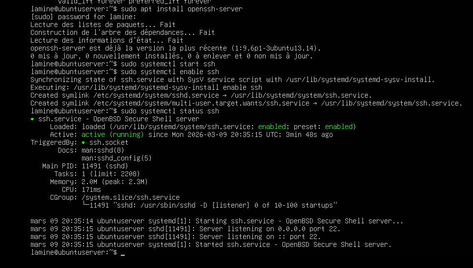
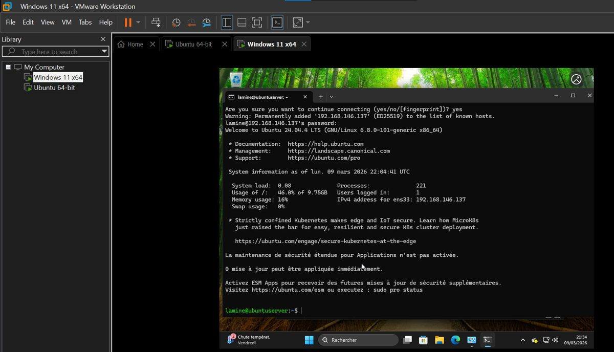
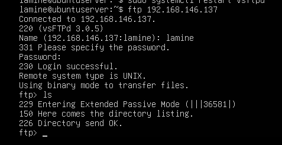
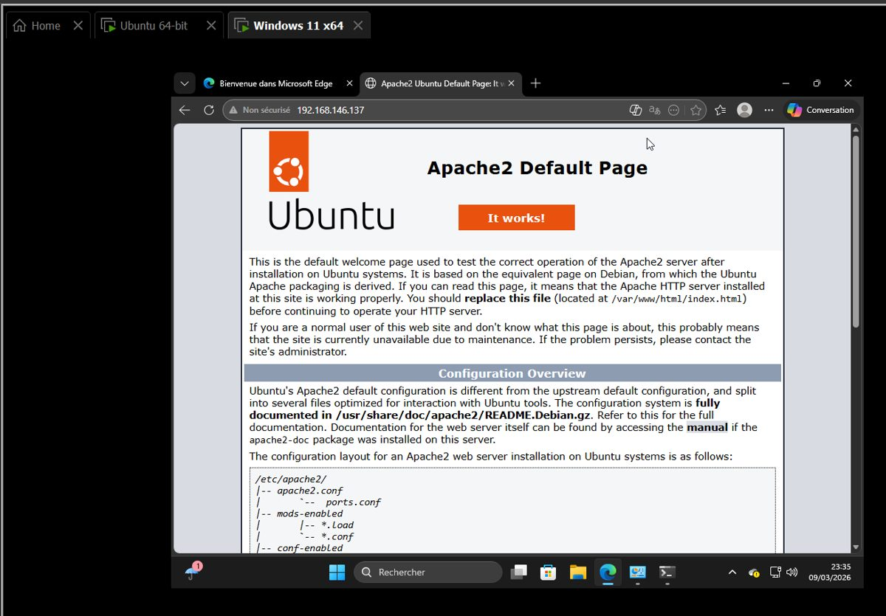
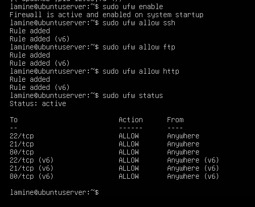

Services réseau sous Ubuntu Server 2026 SSH, FTP et HTTP configurés sur un serveur Ubuntu, protégés par le pare-feu UFW, et testés depuis un client Windows 11.
Ce que j'ai fait
- Mise à jour du serveur puis vérification de son adresse IP avec
ip a. - SSH : installation d'OpenSSH, démarrage automatique au boot, puis connexion à distance depuis le client Windows 11.
- FTP : installation de vsftpd et configuration sécurisée : pas de connexion anonyme, chaque utilisateur enfermé dans son dossier (
chroot_local_user=YES). - HTTP : installation d'Apache2 et publication d'une page web dans
/var/www/html/. - Contrôle : vérification des ports ouverts avec
ss -tulpn. - Pare-feu : activation d'UFW et ouverture des seuls ports nécessaires (22, 21 et 80).
lamine@ubuntuserver:~$ sudo apt install openssh-server vsftpd apache2
lamine@ubuntuserver:~$ sudo systemctl enable ssh
lamine@ubuntuserver:~$ sudo nano /etc/vsftpd.conf
lamine@ubuntuserver:~$ sudo ufw allow ssh && sudo ufw allow ftp && sudo ufw allow http
lamine@ubuntuserver:~$ sudo ufw enableCaptures





Ce que j'en retiens
La différence entre un protocole et le logiciel qui le fait tourner, l'importance de n'ouvrir que les ports utiles, et le choix du mode réseau des VM : en NAT, la VM n'est pas joignable depuis le réseau local ; en Bridge, elle s'y comporte comme une vraie machine.
Ubuntu Server · OpenSSH · vsftpd · Apache2 · UFW · VMware Workstation